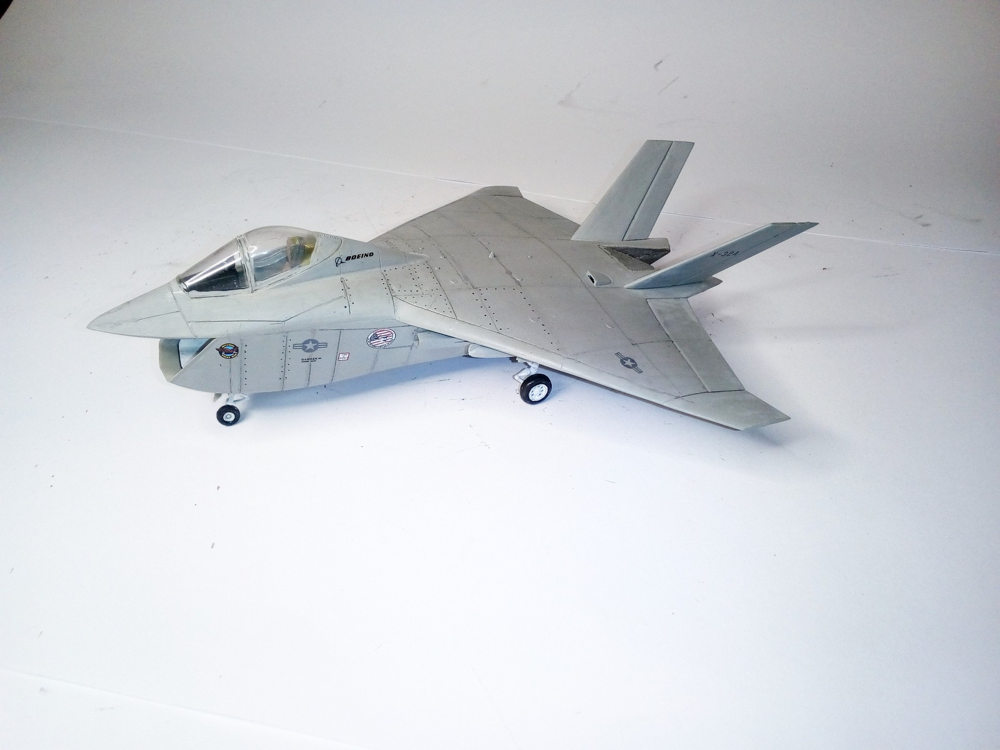

Aerei · scale model archive
Boeing X 32 JSF
Boeing X 32 JSF — Kit: Italeri, Scale: 1/72. The first flight of the X-32A (designed for CTOL and carrier trials) took place on 18 September 2000, from…

Photo gallery
English description
The first flight of the X-32A (designed for CTOL and carrier trials) took place on 18 September 2000, from Boeing's Palmdale plant to Edwards Air Force Base
#1/72 #Italeri
Descrizione italiana
Il primo volo del X-32A (designed per CTOL e autorier trials) took place on 18 settembre 2000, da Boeing's Palmdale plant una Edwards Air Force Base.